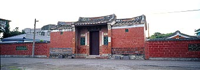

一條龍（苑里民宅）
轆轤把（苑里民宅）
三合院（深坑黃宅）
多護龍（苑里民宅）
多院落（麻豆林宅）
旗竿厝（馬興益源大厝）
街屋（三峽老街）
亭仔腳（三峽老街）
樓井（鹿港元昌商宅）

住宅是人們最熟悉的建築，某方面與「家」是同義語。住宅可是為加除盛衰之指標，因此傳統觀念中，一旦成功必要回家鄉起大宅。臺灣住宅建築有三十多種不同型態，不過，基本上以三合院及四合院為單位擴充。
• 一條龍
「一條龍」依廳房數目，有「三間起」、「五間起」
臺灣最基本的單位型態為三開間的房屋，入口設在中間，即所謂的「一條龍」式樣，形狀如「一」字形，只有正身沒有左右護龍，人口較少的家庭採用，最小的面寬為三開間，中間為廳，左間為大房，右間為二房，亦稱為「三間起」；有時兩端各加一房間，則稱為「五間起」。
• 轆轤把（單伸手）
「轆轤把」又稱「護龍」、「單伸手」、「橫屋」
在「三間起」或「五間起」的兩端接上一段垂直方向的房屋，使整個平面成為曲尺形，形狀如「L」，像是汲水用的搖桿，故又稱「轆轤把」，閩南習稱護龍、「伸手」，客家人稱為「橫屋」。
• 三合院
三合院、四合院、多護龍、多院落等，習稱「大厝」
當左右對稱即稱為「三合院」，形狀如「ㄇ」字形，正身左右均興建護龍，俗稱「正身帶護龍」或「大厝身雙護龍」。護龍之最外端常可會再加單坡式屋頂的簡單房子，稱稠，多拿來畜養豬牛之處。另外亦在可在屋側搭「寮」，以飼養家禽。
• 四合院
三合院之前面開口處有時加築圍牆，若使用房屋補上缺口，則稱為「四合院」，以房屋在四面圍出封閉的中庭。一般而言，農家多用三合院，前面廣場稱為「埕」，作為農作物曝曬場；較富裕人家或官宅多用四合院，因為有門廳與正廳緩衝，私密性較高。有句話形容大宅「大厝九包五，三落百二門」，即是說正堂有九開間，門廳有五開間，前後三進，門窗共有一百二十個的意思。
• 多護龍
當家族成員再增加或為某些性質空間需求，以橫向擴展與縱向進展兩種方式解決。橫向擴展是在護龍外，再加長形平面的護龍；中間仍以庭院分隔，稱為「外護龍」，外護龍的外側更可有「外外護」。目前最大的例子是左右各有四座護龍，客家建築尤其擅長護龍之變化，橫向擴展多用於農村。
• 多院落
縱向進展多用於官宅等嚴肅且正式的建築；房屋前後分列，兩列稱為兩落，三列稱為三落，有多達四落或五落。基本上，橫向發展有其自由特性；縱向發展有其約束控制之特質，對於士大夫的深宅大院心理需求，當然以後者為宜。
中庭為住宅建築之靈魂，以四合院而言，中庭為內部空間之延伸；中庭以正方形為多，深長型的中庭則可分為前後兩院，後院較前院更具私密性；寬闊型的中庭則可分為三部份，中間為正身使用，兩旁則分別附屬於護龍。有時中庭與部份護龍相接，中庭成為「凸」字形之形狀。
永靖南港西庄陳厝餘三館
而中舉的宅第則可在門前設立旗杆座，特別將這樣的房屋稱為「旗杆厝」。
街屋即所謂市街商店住宅，日治時期臨街面設有亭仔腳，後來遂與主屋頂合而為一；入口設於中央，兩側有店窗；進入後院之走道稱為「巷道」，巷路可設於中央，亦可設於單邊，兩進之間院落稱為「深井」，廚房設在此處。
街屋多有夾層或二樓以上的建築，樓板挖有樓井以利採光，街屋平面為狹長型，增建時可向後面發展，形成多進的建築。